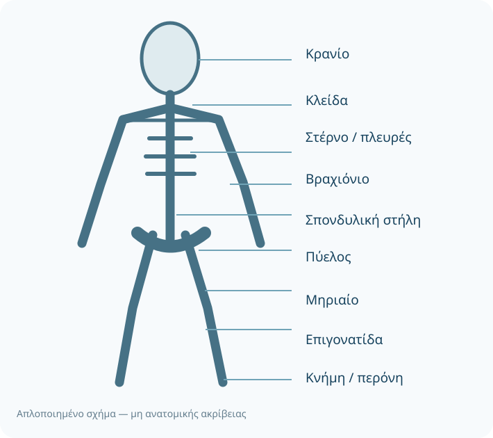
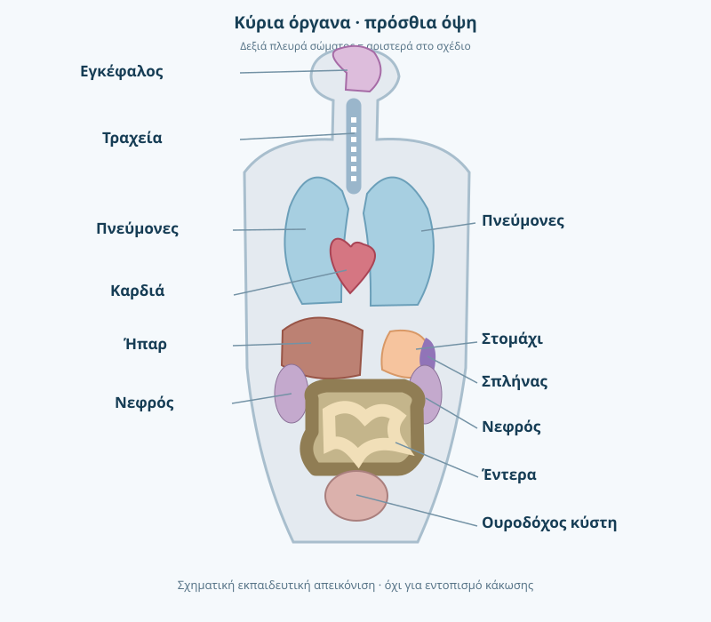

Κατάρτιση ΣΑΕΚ · Α΄ εξάμηνο
Ανατομία
Θέση και δομή οργάνων, συστημάτων και βασικών ανατομικών σημείων.
Πάτησε ένα κεφάλαιο για ανάγνωση. Όταν το μελετήσεις, επίλεξε «Ολοκλήρωσα την ανάγνωση».
Οπτικός χάρτης βασικών οστών
Απλοποιημένο εκπαιδευτικό διάγραμμα με ελληνική ορολογία, όχι ανατομική απεικόνιση για κλινική χρήση.

Οπτικός χάρτης ανθρώπινων οργάνων
Εκπαιδευτικό σχήμα πρόσθιας όψης με ελληνική ορολογία. Οι θέσεις είναι σχηματικές και δεν αποτελούν ακριβή κλινική απεικόνιση.

Περιεχόμενα μαθήματος · 14 κεφάλαια
01Ανατομική θέση και προσανατολισμόςΔεν ολοκληρώθηκε
Η ανατομική θέση περιγράφει το σώμα όρθιο, με τα άνω άκρα στο πλάι και τις παλάμες στραμμένες προς τα εμπρός. «Άνω» σημαίνει προς την κεφαλή, «κάτω» προς τα πόδια, «πρόσθιο» προς την κοιλιά και «οπίσθιο» προς τη ράχη. Οι όροι «έσω» και «έξω» προσδιορίζουν αν μια δομή βρίσκεται κοντά ή μακριά από τη μέση γραμμή. Η κοινή ορολογία βοηθά το πλήρωμα να περιγράφει με ακρίβεια τραύματα και ευρήματα.
SOS · Ανατομική θέση: όρθιο σώμα, παλάμες εμπρός· οι κατευθύνσεις δεξιά/αριστερά αναφέρονται στον ασθενή.
Περισσότερη εξήγηση
Αναλυτική κατανόηση
Ο ανατομικός προσανατολισμός λειτουργεί ως κοινή «γλώσσα» μεταξύ διασώστη, διαβιβαστή και ΤΕΠ. Κεντρικά σημαίνει πλησιέστερα στον άξονα του σώματος, περιφερικά μακρύτερα από αυτόν· εγγύς και άπω συγκρίνουν σημεία στο ίδιο άκρο. Το μέσο επίπεδο χωρίζει το σώμα σε δεξιό και αριστερό τμήμα, το μετωπιαίο σε πρόσθιο και οπίσθιο και το εγκάρσιο σε άνω και κάτω. Το δεξί και αριστερό αναφέρονται πάντοτε στην πλευρά του ασθενούς, όχι του παρατηρητή.
Σύνδεση με το έργο του διασώστη
Για τραύμα περιγράφουμε συγκεκριμένα θέση, πλευρά, μέγεθος και γειτονικό ανατομικό σημείο. «Άπω τμήμα δεξιού αντιβραχίου, ραχιαία επιφάνεια» είναι ακριβέστερο από «πίσω από το χέρι».
Ερώτηση αυτοελέγχου
Ποια είναι η διαφορά «εγγύς» και «άπω»;
Δες την ενδεικτική απάντηση
Εγγύς = κοντά στην πρόσφυση ή στην αρχή του άκρου· άπω = μακριά από αυτή.
Συμπληρωματική σημείωση
Σε βάθος — επεξήγηση
Αφετηρία όλων των ανατομικών περιγραφών είναι το σώμα του ίδιου του ασθενούς: το δεξί του δεν αλλάζει όταν τον κοιτάζουμε από απέναντι. Το οβελιαίο επίπεδο χωρίζει δεξιά/αριστερά, το μετωπιαίο πρόσθια/οπίσθια και το εγκάρσιο άνω/κάτω. Ο όρος εγγύς σημαίνει πλησιέστερα στη ρίζα ενός άκρου, ενώ άπω σημαίνει μακρύτερα. Αυτή η συνέπεια προστατεύει από λανθασμένη καταγραφή του σημείου τραυματισμού.
Πηγή προγράμματος: Επίσημος οδηγός κατάρτισης 2024 (περιγραφή μαθήματος, όχι πιστοποίηση των επιμέρους κλινικών ισχυρισμών).
02Οστά του κορμού και των άκρωνΔεν ολοκληρώθηκε
Ο αξονικός σκελετός περιλαμβάνει το κρανίο, τη σπονδυλική στήλη, τις πλευρές και το στέρνο. Ο σκελετός των άκρων περιλαμβάνει την ωμική ζώνη, τα οστά των άνω άκρων, την πύελο και τα οστά των κάτω άκρων. Στο άνω άκρο αναγνωρίζουμε βραχιόνιο, κερκίδα και ωλένη· στο κάτω άκρο μηριαίο, επιγονατίδα, κνήμη και περόνη. Η σωστή αναγνώριση βοηθά στην περιγραφή κακώσεων και στην αποφυγή ακατάλληλων χειρισμών.
SOS · Αξονικός σκελετός: κρανίο, σπονδυλική στήλη, πλευρές, στέρνο· σκελετός άκρων: ζώνες και οστά άνω/κάτω άκρων.
Περισσότερη εξήγηση
Αναλυτική κατανόηση
Ο αξονικός σκελετός περιλαμβάνει κρανίο, σπονδυλική στήλη και θωρακικό κλωβό. Ο σκελετός των άκρων περιλαμβάνει την ωμική ζώνη, τα άνω άκρα, την πυελική ζώνη και τα κάτω άκρα. Η σπονδυλική στήλη περιγράφεται σε αυχενική, θωρακική, οσφυϊκή, ιερή και κοκκυγική μοίρα. Η κερκίδα είναι στην πλευρά του αντίχειρα όταν το αντιβράχιο βρίσκεται σε ανατομική θέση, η ωλένη στην πλευρά του μικρού δακτύλου. Η κνήμη εντοπίζεται έσω και η περόνη έξω στην κνήμη-περόνη του κάτω άκρου.
Σύνδεση με το έργο του διασώστη
Στην εκτίμηση κατάγματος εξετάζουμε παραμόρφωση, τραύμα, πόνο, κυκλοφορία, αισθητικότητα και κινητικότητα περιφερικά της κάκωσης πριν και μετά από ακινητοποίηση σύμφωνα με την εκπαίδευση.
Ερώτηση αυτοελέγχου
Ποια δύο οστά σχηματίζουν το αντιβράχιο;
Δες την ενδεικτική απάντηση
Η κερκίδα και η ωλένη.
Συμπληρωματική σημείωση
Σε βάθος — επεξήγηση
Ο αξονικός σκελετός περιλαμβάνει το κρανίο, τη σπονδυλική στήλη και τον θώρακα. Ο σκελετός των άκρων περιλαμβάνει ωμική και πυελική ζώνη μαζί με τα οστά των άνω και κάτω άκρων. Στο άνω άκρο αναγνωρίζουμε βραχιόνιο, κερκίδα και ωλένη· στο κάτω, μηριαίο, επιγονατίδα, κνήμη και περόνη. Σε οποιαδήποτε κάκωση εξετάζουμε παράλληλα την περιφερική αιμάτωση και την αισθητικότητα.
Πηγή προγράμματος: Επίσημος οδηγός κατάρτισης 2024 (περιγραφή μαθήματος, όχι πιστοποίηση των επιμέρους κλινικών ισχυρισμών).
03Θώρακας και αναπνευστικό σύστημαΔεν ολοκληρώθηκε
Η θωρακική κοιλότητα προστατεύεται από πλευρές, στέρνο και θωρακικούς σπονδύλους. Οι πνεύμονες βρίσκονται στον θώρακα, εκατέρωθεν του μεσοθωρακίου, ενώ η καρδιά βρίσκεται κυρίως πίσω από το στέρνο, ελαφρώς προς τα αριστερά. Η τραχεία διακλαδίζεται στους κύριους βρόγχους και αυτοί οδηγούν στον πνευμονικό ιστό. Το διάφραγμα χωρίζει τον θώρακα από την κοιλιά και συμμετέχει αποφασιστικά στην εισπνοή.
SOS · Η τραχεία καταλήγει στους κύριους βρόγχους· οι κυψελίδες είναι ο τόπος ανταλλαγής αερίων και το διάφραγμα κύριος εισπνευστικός μυς.
Περισσότερη εξήγηση
Αναλυτική κατανόηση
Ο θώρακας περικλείει τους πνεύμονες και, στο μεσοθωράκιο, την καρδιά, μεγάλα αγγεία, τραχεία και οισοφάγο. Ο αέρας εισέρχεται από ρινική ή στοματική κοιλότητα, περνά από φάρυγγα, λάρυγγα, τραχεία, βρόγχους και βρογχιόλια και καταλήγει στις κυψελίδες. Εκεί πραγματοποιείται ανταλλαγή οξυγόνου και διοξειδίου του άνθρακα με τα πνευμονικά τριχοειδή. Το διάφραγμα συσπάται και κατέρχεται στην εισπνοή, αυξάνοντας τον όγκο της θωρακικής κοιλότητας.
Σύνδεση με το έργο του διασώστη
Η πλευρά και το ύψος μιας κάκωσης θώρακα βοηθούν στην υπόθεση πιθανών βλαβών, αλλά η ανατομική θέση μόνη της δεν αποτελεί διάγνωση.
Ερώτηση αυτοελέγχου
Ποια ανατομική δομή χωρίζει τον θώρακα από την κοιλιά;
Δες την ενδεικτική απάντηση
Το διάφραγμα.
Συμπληρωματική σημείωση
Σε βάθος — επεξήγηση
Ο θώρακας περικλείει τους πνεύμονες, την καρδιά και μεγάλα αγγεία. Το στέρνο, τα πλευρά και οι θωρακικοί σπόνδυλοι σχηματίζουν τον οστέινο κλωβό. Ο δεξιός πνεύμονας έχει συνήθως τρεις λοβούς και ο αριστερός δύο. Το διάφραγμα χωρίζει θωρακική και κοιλιακή κοιλότητα και αποτελεί τον κύριο μυ της ήρεμης εισπνοής. Η ανατομία εξηγεί γιατί η βλάβη πλευρών ή πνευμόνων δυσκολεύει τον αερισμό.
Πηγή προγράμματος: Επίσημος οδηγός κατάρτισης 2024 (περιγραφή μαθήματος, όχι πιστοποίηση των επιμέρους κλινικών ισχυρισμών).
04Κοιλιακά όργαναΔεν ολοκληρώθηκε
Στην άνω κοιλιά βρίσκονται, μεταξύ άλλων, το ήπαρ κυρίως δεξιά, το στομάχι κυρίως αριστερά και ο σπλήνας αριστερά. Το λεπτό και το παχύ έντερο καταλαμβάνουν μεγάλο μέρος της κοιλιάς. Οι νεφροί βρίσκονται οπισθοπεριτοναϊκά, εκατέρωθεν της σπονδυλικής στήλης. Οι περιγραφές «δεξιό άνω τεταρτημόριο» ή «αριστερό κάτω τεταρτημόριο» επιτρέπουν σαφή καταγραφή της εντόπισης άλγους.
SOS · Ήπαρ κυρίως δεξιά άνω, σπλήνας και στομάχι κυρίως αριστερά άνω· οι νεφροί είναι οπισθοπεριτοναϊκοί.
Περισσότερη εξήγηση
Αναλυτική κατανόηση
Η κοιλιακή χώρα περιγράφεται πρακτικά σε τέσσερα τεταρτημόρια. Στο δεξιό άνω βρίσκεται κυρίως το ήπαρ και η χοληδόχος κύστη· στο αριστερό άνω βρίσκονται, μεταξύ άλλων, ο σπλήνας και τμήμα του στομάχου. Οι νεφροί βρίσκονται στο οπίσθιο κοιλιακό διαμέρισμα, δηλαδή οπισθοπεριτοναϊκά. Το λεπτό έντερο επιτελεί το μεγαλύτερο μέρος της απορρόφησης θρεπτικών ουσιών, ενώ το παχύ έντερο συμβάλλει στην απορρόφηση νερού. Η ουροδόχος κύστη βρίσκεται στην πύελο.
Σύνδεση με το έργο του διασώστη
Πόνος ή τραύμα σε συγκεκριμένο τεταρτημόριο πρέπει να καταγράφεται μαζί με τη γενική εικόνα, τον μηχανισμό κάκωσης και τα ζωτικά σημεία, όχι να οδηγεί σε αυθαίρετη διάγνωση οργάνου.
Ερώτηση αυτοελέγχου
Πού βρίσκεται κυρίως ο σπλήνας;
Δες την ενδεικτική απάντηση
Στο αριστερό άνω τεταρτημόριο της κοιλιάς.
Συμπληρωματική σημείωση
Σε βάθος — επεξήγηση
Το ήπαρ βρίσκεται κυρίως στο δεξιό άνω τεταρτημόριο, το στομάχι και ο σπλήνας προς το αριστερό άνω, και το έντερο καταλαμβάνει μεγάλο μέρος της κοιλιάς. Οι νεφροί είναι οπισθοπεριτοναϊκοί. Η θέση ενός οργάνου δεν αρκεί για διάγνωση κοιλιακού πόνου, επειδή ο σπλαχνικός πόνος μπορεί να προβάλλεται αλλού. Η αναφορά θέσης, ποιότητας πόνου και συνοδών συμπτωμάτων πρέπει να είναι συγκεκριμένη.
Πηγή προγράμματος: Επίσημος οδηγός κατάρτισης 2024 (περιγραφή μαθήματος, όχι πιστοποίηση των επιμέρους κλινικών ισχυρισμών).
05Νευρικό και κυκλοφορικό σύστημαΔεν ολοκληρώθηκε
Ο εγκέφαλος και ο νωτιαίος μυελός αποτελούν το κεντρικό νευρικό σύστημα. Η καρδιά είναι τετράχωρο όργανο με δύο κόλπους και δύο κοιλίες· οι αρτηρίες μεταφέρουν αίμα από την καρδιά και οι φλέβες προς αυτή. Η αορτή εκφύεται από την αριστερή κοιλία, ενώ η πνευμονική αρτηρία μεταφέρει αίμα προς τους πνεύμονες. Η σύνδεση ανατομίας και λειτουργίας βοηθά στην κατανόηση των σημείων shock, εγκεφαλικού και αναπνευστικής ανεπάρκειας.
SOS · ΚΝΣ = εγκέφαλος και νωτιαίος μυελός· οι αρτηρίες απομακρύνουν αίμα από την καρδιά, οι φλέβες το επιστρέφουν.
Περισσότερη εξήγηση
Αναλυτική κατανόηση
Το κεντρικό νευρικό σύστημα περιλαμβάνει εγκέφαλο και νωτιαίο μυελό· το περιφερικό τα νεύρα που μεταφέρουν αισθητικά και κινητικά σήματα. Η καρδιά έχει τέσσερις κοιλότητες: δεξιό/αριστερό κόλπο και δεξιά/αριστερή κοιλία. Στην πνευμονική κυκλοφορία αίμα πηγαίνει από τη δεξιά κοιλία στους πνεύμονες και επιστρέφει στον αριστερό κόλπο. Στη συστηματική κυκλοφορία αίμα φεύγει από την αριστερή κοιλία μέσω της αορτής. Οι στεφανιαίες αρτηρίες τροφοδοτούν τον μυοκάρδιο με αίμα.
Σύνδεση με το έργο του διασώστη
Η αιφνίδια εστιακή αδυναμία μπορεί να υποδηλώνει νευρολογικό επείγον και ο θωρακικός πόνος καρδιολογικό επείγον· και τα δύο απαιτούν συστηματική αρχική εκτίμηση και έγκαιρη ενημέρωση.
Ερώτηση αυτοελέγχου
Από ποια κοιλία αρχίζει η συστηματική κυκλοφορία;
Δες την ενδεικτική απάντηση
Από την αριστερή κοιλία, μέσω της αορτής.
Συμπληρωματική σημείωση
Σε βάθος — επεξήγηση
Το κεντρικό νευρικό σύστημα περιλαμβάνει εγκέφαλο και νωτιαίο μυελό, ενώ το περιφερικό νεύρα και γάγγλια. Οι αρτηρίες μεταφέρουν αίμα μακριά από την καρδιά και οι φλέβες προς αυτήν, ανεξάρτητα από την περιεκτικότητά τους σε οξυγόνο. Εξαίρεση στην απλοϊκή σύνδεση «αρτηρία = οξυγονωμένο» αποτελούν η πνευμονική αρτηρία και οι πνευμονικές φλέβες. Χρειάζεται σαφήνεια στη διάκριση ανατομής και λειτουργίας.
Πηγή προγράμματος: Επίσημος οδηγός κατάρτισης 2024 (περιγραφή μαθήματος, όχι πιστοποίηση των επιμέρους κλινικών ισχυρισμών).
06Κύτταρο, ιστοί και όργαναΔεν ολοκληρώθηκε
Το κύτταρο είναι η βασική λειτουργική μονάδα του ανθρώπινου σώματος. Η κυτταρική μεμβράνη ρυθμίζει την ανταλλαγή ουσιών, ο πυρήνας περιέχει το γενετικό υλικό και τα μιτοχόνδρια συμμετέχουν στην παραγωγή ενέργειας. Όμοια κύτταρα με κοινό ρόλο συγκροτούν ιστούς.
SOS · Κύτταρο → ιστός → όργανο → σύστημα· διαφορετικοί ιστοί συνεργάζονται για τη λειτουργία του οργάνου.
Περισσότερη εξήγηση
Θεωρία & κατανόηση
Οι τέσσερις βασικές κατηγορίες ιστών είναι ο επιθηλιακός, ο συνδετικός, ο μυϊκός και ο νευρικός. Όργανο είναι μια δομή που αποτελείται από περισσότερους ιστούς και επιτελεί συγκεκριμένη λειτουργία. Το όργανο συμμετέχει σε σύστημα οργάνων, όπως το αναπνευστικό ή το κυκλοφορικό.
Βασικό σημείο για επανάληψη
Τέσσερις βασικοί ιστοί: επιθηλιακός, συνδετικός, μυϊκός, νευρικός.
Ερώτηση αυτοελέγχου
Ποια είναι η διαφορά ιστού και οργάνου;
Δες την ενδεικτική απάντηση
Ο ιστός περιλαμβάνει κύτταρα με κοινά γνωρίσματα, ενώ το όργανο συνδυάζει διαφορετικούς ιστούς για μία λειτουργία.
Συμπληρωματική σημείωση
Σε βάθος — επεξήγηση
Το κύτταρο διατηρεί δικό του μεταβολισμό, ενώ η λειτουργία του εξαρτάται από την παροχή οξυγόνου, θρεπτικών ουσιών και την απομάκρυνση αποβλήτων. Ο επιθηλιακός ιστός καλύπτει επιφάνειες, ο συνδετικός στηρίζει, ο μυϊκός παράγει κίνηση και ο νευρικός μεταδίδει πληροφορία. Η σχέση κύτταρο–ιστός–όργανο–σύστημα είναι ο βασικός «χάρτης» για να καταλάβουμε τη δυσλειτουργία πολλών οργάνων μαζί.
Πηγή προγράμματος: Επίσημος οδηγός κατάρτισης 2024 (περιγραφή μαθήματος, όχι πιστοποίηση των επιμέρους κλινικών ισχυρισμών).
07Σπονδυλική στήλη και νωτιαίος μυελόςΔεν ολοκληρώθηκε
Η σπονδυλική στήλη αποτελεί τον άξονα στήριξης του κορμού και σχηματίζεται από αυχενικούς, θωρακικούς, οσφυϊκούς, ιερούς και κοκκυγικούς σπονδύλους. Μεταξύ των περισσότερων γειτονικών σπονδύλων υπάρχουν μεσοσπονδύλιοι δίσκοι που συμβάλλουν στην απορρόφηση φορτίσεων.
SOS · Σπονδυλική στήλη: 7 αυχενικοί, 12 θωρακικοί, 5 οσφυϊκοί σπόνδυλοι· ο νωτιαίος μυελός μεταφέρει νευρικά σήματα.
Περισσότερη εξήγηση
Θεωρία & κατανόηση
Ο σπονδυλικός σωλήνας προστατεύει τον νωτιαίο μυελό, ενώ τα νωτιαία νεύρα περνούν προς τον κορμό και τα άκρα. Η βλάβη του νωτιαίου μυελού μπορεί να προκαλέσει διαταραχές κίνησης, αισθητικότητας και αυτόνομων λειτουργιών. Σε τραυματία, η προστασία της σπονδυλικής στήλης καθορίζεται από τη συνολική εκτίμηση και το ισχύον πρωτόκολλο.
Βασικό σημείο για επανάληψη
7 αυχενικοί, 12 θωρακικοί και 5 οσφυϊκοί σπόνδυλοι στον τυπικό ανθρώπινο σκελετό.
Ερώτηση αυτοελέγχου
Ποια δομή προστατεύεται μέσα στον σπονδυλικό σωλήνα;
Δες την ενδεικτική απάντηση
Ο νωτιαίος μυελός.
Συμπληρωματική σημείωση
Σε βάθος — επεξήγηση
Η αυχενική μοίρα περιλαμβάνει 7 σπονδύλους, η θωρακική 12 και η οσφυϊκή 5. Ο νωτιαίος μυελός μεταφέρει κινητικές και αισθητικές οδούς· οι ρίζες των νωτιαίων νεύρων νευρώνουν συγκεκριμένες περιοχές. Μια κάκωση μπορεί να συνδυάζει οστική βλάβη και νευρολογικό έλλειμμα χωρίς το ένα να είναι πάντοτε ορατό. Ακολουθούμε την τεκμηριωμένη εκτίμηση και τις κατά τόπο διαδικασίες διακομιδής, όχι αυθαίρετη ακινητοποίηση.
Πηγή προγράμματος: Επίσημος οδηγός κατάρτισης 2024 (περιγραφή μαθήματος, όχι πιστοποίηση των επιμέρους κλινικών ισχυρισμών).
08Κρανίο, εγκέφαλος και μήνιγγεςΔεν ολοκληρώθηκε
Το κρανίο περιλαμβάνει οστά που σχηματίζουν τον εγκεφαλικό θόλο και το προσωπικό κρανίο. Ο εγκεφαλικός θόλος προστατεύει τον εγκέφαλο. Η κάτω γνάθος είναι κινητό οστό του προσώπου, ενώ ο ινιακός οστέινος σχηματισμός βρίσκεται πίσω και κάτω στον θόλο.
SOS · Το κρανίο προστατεύει τον εγκέφαλο· οι τρεις μήνιγγες είναι σκληρά, αραχνοειδής και χοριοειδής.
Περισσότερη εξήγηση
Θεωρία & κατανόηση
Οι μήνιγγες είναι τρεις υμένες: σκληρά, αραχνοειδής και χοριοειδής. Το εγκεφαλονωτιαίο υγρό συμβάλλει στη μηχανική προστασία του κεντρικού νευρικού συστήματος. Η αναγνώριση κρανιοπροσωπικών δομών βοηθά στην περιγραφή τραύματος, όχι στην αυτόνομη διάγνωση ενδοκράνιας βλάβης.
Βασικό σημείο για επανάληψη
Οι τρεις μήνιγγες είναι σκληρά, αραχνοειδής, χοριοειδής.
Ερώτηση αυτοελέγχου
Ποια δομή εντοπίζεται γύρω από τον εγκέφαλο κάτω από τα οστά;
Δες την ενδεικτική απάντηση
Οι μήνιγγες.
Συμπληρωματική σημείωση
Σε βάθος — επεξήγηση
Ο εγκέφαλος περιλαμβάνει μεταξύ άλλων τα εγκεφαλικά ημισφαίρια, την παρεγκεφαλίδα και το εγκεφαλικό στέλεχος. Η παρεγκεφαλίδα συμβάλλει στον συντονισμό, ενώ το εγκεφαλικό στέλεχος σε βασικές λειτουργίες ζωής. Οι μήνιγγες προστατεύουν το ΚΝΣ και το εγκεφαλονωτιαίο υγρό κυκλοφορεί σε ειδικούς χώρους. Αλλαγές στην εγρήγορση μετά από τραύμα απαιτούν επείγουσα εκτίμηση ακόμη και χωρίς εμφανές κάταγμα κρανίου.
Πηγή προγράμματος: Επίσημος οδηγός κατάρτισης 2024 (περιγραφή μαθήματος, όχι πιστοποίηση των επιμέρους κλινικών ισχυρισμών).
09Αρθρώσεις, σύνδεσμοι και μύεςΔεν ολοκληρώθηκε
Οι αρθρώσεις συνδέουν τα οστά και επιτρέπουν από μικρή έως μεγάλη κινητικότητα, ανάλογα με τον τύπο τους. Οι σύνδεσμοι σταθεροποιούν μια άρθρωση συνδέοντας οστά, ενώ οι τένοντες συνδέουν μύες με οστά. Η άρθρωση του ώμου είναι ιδιαίτερα κινητή, ενώ η άρθρωση του ισχίου συνδυάζει κινητικότητα και σταθερότητα.
SOS · Τένοντας = μυς προς οστό· σύνδεσμος = οστό προς οστό· άρθρωση συνδέει οστά.
Περισσότερη εξήγηση
Θεωρία & κατανόηση
Οι σκελετικοί μύες συσπώνται υπό εκούσιο έλεγχο και προκαλούν κίνηση. Οι λείοι μύες βρίσκονται στα τοιχώματα σπλάχνων και αγγείων, ενώ το μυοκάρδιο αποτελεί εξειδικευμένο μυϊκό ιστό της καρδιάς. Μια κάκωση άρθρωσης περιγράφεται με θέση, παραμόρφωση, κινητικότητα, πόνο και περιφερικά νευροαγγειακά ευρήματα.
Βασικό σημείο για επανάληψη
Ο σύνδεσμος συνδέει οστά· ο τένοντας συνδέει μυ με οστό.
Ερώτηση αυτοελέγχου
Πώς διαφέρουν ο τένοντας και ο σύνδεσμος;
Δες την ενδεικτική απάντηση
Ο τένοντας συνδέει μυ με οστό και ο σύνδεσμος συνδέει οστό με οστό.
Συμπληρωματική σημείωση
Σε βάθος — επεξήγηση
Μια διάρθρωση έχει αρθρικές επιφάνειες, θύλακο και συχνά αρθρικό υγρό, επιτρέποντας ομαλή κίνηση. Οι σύνδεσμοι σταθεροποιούν οστό με οστό και οι τένοντες μεταφέρουν τη δύναμη μυός προς οστό. Ο σκελετικός μυς αποτελείται από ίνες που συσπώνται χάρη στην αλληλεπίδραση ακτίνης και μυοσίνης. Μετά από τραυματισμό καταγράφουμε ανώμαλη θέση, οίδημα και νευροαγγειακή εικόνα.
Πηγή προγράμματος: Επίσημος οδηγός κατάρτισης 2024 (περιγραφή μαθήματος, όχι πιστοποίηση των επιμέρους κλινικών ισχυρισμών).
10Καρδιά, μεγάλα αγγεία και βαλβίδεςΔεν ολοκληρώθηκε
Η καρδιά έχει τέσσερις κοιλότητες: δύο κόλπους και δύο κοιλίες. Το αίμα από το σώμα επιστρέφει στον δεξιό κόλπο, περνά στη δεξιά κοιλία και κατευθύνεται προς τους πνεύμονες. Από τους πνεύμονες επιστρέφει στον αριστερό κόλπο, περνά στην αριστερή κοιλία και εξωθείται στην αορτή.
SOS · Ροή: δεξιά καρδιά → πνεύμονες → αριστερή καρδιά → αορτή → σώμα· οι βαλβίδες περιορίζουν την παλινδρόμηση.
Περισσότερη εξήγηση
Θεωρία & κατανόηση
Οι καρδιακές βαλβίδες διατηρούν τη ροή προς μία κατεύθυνση: τριγλώχινα, πνευμονική, μιτροειδής και αορτική. Τα στεφανιαία αγγεία τροφοδοτούν τον καρδιακό μυ. Η γνώση της πορείας του αίματος εξηγεί γιατί μια διαταραχή καρδιακής αντλίας επηρεάζει την αιμάτωση όλων των οργάνων.
Βασικό σημείο για επανάληψη
Τριγλώχινα δεξιά, μιτροειδής αριστερά, αορτική και πνευμονική στην έξοδο των κοιλιών.
Ερώτηση αυτοελέγχου
Από ποια κοιλία εκφύεται η αορτή;
Δες την ενδεικτική απάντηση
Από την αριστερή κοιλία.
Συμπληρωματική σημείωση
Σε βάθος — επεξήγηση
Η δεξιά καρδιά στέλνει αίμα στη μικρή κυκλοφορία και η αριστερή στη συστηματική κυκλοφορία. Η μιτροειδής βαλβίδα βρίσκεται μεταξύ αριστερού κόλπου και κοιλίας, η τριγλώχινα δεξιά. Οι στεφανιαίες αρτηρίες αιματώνουν το μυοκάρδιο. Η αορτή είναι το κύριο αρτηριακό αγγείο της συστηματικής κυκλοφορίας. Μια διαταραχή στεφανιαίας ροής μπορεί να προκαλέσει ισχαιμία ακόμη και χωρίς αρχικά εμφανείς εξωτερικές βλάβες.
Πηγή προγράμματος: Επίσημος οδηγός κατάρτισης 2024 (περιγραφή μαθήματος, όχι πιστοποίηση των επιμέρους κλινικών ισχυρισμών).
11Ανώτεροι και κατώτεροι αεραγωγοίΔεν ολοκληρώθηκε
Η μύτη και η στοματική κοιλότητα οδηγούν στον φάρυγγα. Ο λάρυγγας συνδέει τον φάρυγγα με την τραχεία και περιλαμβάνει τις φωνητικές χορδές. Η τραχεία διακλαδίζεται σε δύο κύριους βρόγχους που κατευθύνονται στους πνεύμονες.
SOS · Διαδρομή αέρα: μύτη/στόμα → φάρυγγας → λάρυγγας → τραχεία → βρόγχοι → κυψελίδες.
Περισσότερη εξήγηση
Θεωρία & κατανόηση
Οι βρόγχοι διακλαδίζονται σε μικρότερους βρόγχους και βρογχιόλια. Οι πνευμονικές κυψελίδες παρέχουν μεγάλη επιφάνεια ανταλλαγής αερίων. Στην εκτίμηση ασθενούς είναι σημαντική η διάκριση μεταξύ ανοιχτού ανατομικά αεραγωγού, αποτελεσματικού αερισμού και επαρκούς οξυγόνωσης.
Βασικό σημείο για επανάληψη
Αεραγωγός → τραχεία → βρόγχοι → βρογχιόλια → κυψελίδες.
Ερώτηση αυτοελέγχου
Πού πραγματοποιείται η ανταλλαγή αερίων με τα πνευμονικά τριχοειδή;
Δες την ενδεικτική απάντηση
Στις κυψελίδες.
Συμπληρωματική σημείωση
Σε βάθος — επεξήγηση
Η επιγλωττίδα συμμετέχει στην προστασία της εισόδου του λάρυγγα κατά την κατάποση. Η τραχεία υποστηρίζεται από χόνδρινους δακτυλίους και διχάζεται σε δεξιό και αριστερό κύριο βρόγχο. Οι κυψελίδες είναι ο τόπος ανταλλαγής αερίων με τα τριχοειδή. Ο ανοιχτός αεραγωγός, ο επαρκής αερισμός και η σωστή ανταλλαγή αερίων είναι τρεις διαφορετικές έννοιες που αξιολογούνται μαζί.
Πηγή προγράμματος: Επίσημος οδηγός κατάρτισης 2024 (περιγραφή μαθήματος, όχι πιστοποίηση των επιμέρους κλινικών ισχυρισμών).
12Πεπτικό σύστημα και αδένεςΔεν ολοκληρώθηκε
Το πεπτικό σύστημα περιλαμβάνει στόμα, φάρυγγα, οισοφάγο, στομάχι, λεπτό και παχύ έντερο, ορθό και πρωκτό. Η διάσπαση της τροφής αρχίζει στο στόμα και συνεχίζεται στο στομάχι και στο λεπτό έντερο. Το λεπτό έντερο είναι σημαντικός τόπος απορρόφησης θρεπτικών ουσιών.
SOS · Λεπτό έντερο: κύρια απορρόφηση θρεπτικών· ήπαρ: χολή· πάγκρεας: πεπτικά ένζυμα και ορμόνες.
Περισσότερη εξήγηση
Θεωρία & κατανόηση
Το ήπαρ επεξεργάζεται θρεπτικά συστατικά και παράγει χολή. Η χοληδόχος κύστη αποθηκεύει και συμπυκνώνει χολή, ενώ το πάγκρεας έχει εξωκρινή πεπτική και ενδοκρινή ορμονική λειτουργία. Η ανατομία αυτών των οργάνων βοηθά στην περιγραφή κοιλιακών συμπτωμάτων χωρίς πρόωρο συμπέρασμα για την αιτία τους.
Βασικό σημείο για επανάληψη
Ήπαρ: χολή· πάγκρεας: πεπτικά ένζυμα και ορμόνες.
Ερώτηση αυτοελέγχου
Ποιο όργανο παράγει τη χολή;
Δες την ενδεικτική απάντηση
Το ήπαρ παράγει τη χολή. Η χοληδόχος κύστη την αποθηκεύει και τη συμπυκνώνει, ενώ η χολή βοηθά στην πέψη και απορρόφηση των λιπών στο λεπτό έντερο.
Συμπληρωματική σημείωση
Σε βάθος — επεξήγηση
Η πέψη περιλαμβάνει μηχανική επεξεργασία, διάσπαση σύνθετων ουσιών και απορρόφηση. Η χολή συμβάλλει στη γαλακτωματοποίηση λιπών, ενώ τα παγκρεατικά ένζυμα στη διάσπαση τροφών. Το λεπτό έντερο είναι κύριος τόπος απορρόφησης και το παχύ έντερο συμβάλλει στην ανάκτηση νερού. Η γνώση αυτών των θέσεων βοηθά να περιγράφουμε εμετό, αιμορραγία και κοιλιακό πόνο χωρίς να υποκαθιστούμε ιατρική διάγνωση.
Πηγή προγράμματος: Επίσημος οδηγός κατάρτισης 2024 (περιγραφή μαθήματος, όχι πιστοποίηση των επιμέρους κλινικών ισχυρισμών).
13Ουροποιητικό και αναπαραγωγικό σύστημαΔεν ολοκληρώθηκε
Οι νεφροί παράγουν ούρα, τα οποία περνούν από τους ουρητήρες στην ουροδόχο κύστη και αποβάλλονται από την ουρήθρα. Βασικές δομές του ανδρικού αναπαραγωγικού συστήματος: όρχεις, επιδιδυμίδες, σπερματικοί πόροι, προστάτης και πέος. Του γυναικείου: ωοθήκες, σάλπιγγες, μήτρα, τράχηλος και κόλπος.
SOS · Ουροποιητικό: νεφροί → ουρητήρες → κύστη → ουρήθρα. Αναπαραγωγικό: όρχεις/σπερματικοί πόροι και ωοθήκες/σάλπιγγες/μήτρα.
Περισσότερη εξήγηση
Θεωρία & κατανόηση
Το ουροποιητικό συμμετέχει στη ρύθμιση υγρών, ηλεκτρολυτών και οξεοβασικής ισορροπίας. Τα αναπαραγωγικά όργανα περιλαμβάνουν διαφορετικές δομές ανά φύλο. Για τον διασώστη, η ανατομική γνώση εξασφαλίζει ακριβή περιγραφή συμπτωμάτων με σεβασμό στην ιδιωτικότητα.
Βασικό σημείο για επανάληψη
Νεφρός → ουρητήρας → ουροδόχος κύστη → ουρήθρα.
Ερώτηση αυτοελέγχου
Ποια δομή μεταφέρει το ούρο από τον νεφρό στην κύστη;
Δες την ενδεικτική απάντηση
Ο ουρητήρας.
Συμπληρωματική σημείωση
Σε βάθος — επεξήγηση
Στον νεφρώνα πραγματοποιούνται διήθηση, επαναρρόφηση και έκκριση. Έτσι οι νεφροί επηρεάζουν το ισοζύγιο υγρών, την αρτηριακή πίεση και το pH. Οι ουρητήρες μεταφέρουν ούρα στην κύστη, ενώ η ουρήθρα τα αποβάλλει. Το αναπαραγωγικό σύστημα έχει διαφορετικά όργανα και λειτουργίες από το ουροποιητικό, παρά τη στενή ανατομική συνάφεια. Ιδιωτικότητα και διακριτικότητα είναι απαραίτητες στην εκτίμηση.
Πηγή προγράμματος: Επίσημος οδηγός κατάρτισης 2024 (περιγραφή μαθήματος, όχι πιστοποίηση των επιμέρους κλινικών ισχυρισμών).
14Ανατομικοί χώροι και τεταρτημόρια κοιλιάςΔεν ολοκληρώθηκε
Η κοιλιά χωρίζεται πρακτικά σε τέσσερα τεταρτημόρια με νοητές κάθετες και οριζόντιες γραμμές στον ομφαλό. Επιπλέον χρησιμοποιούνται εννέα ανατομικές περιοχές για λεπτομερέστερη περιγραφή. Οι όροι δεξιό και αριστερό αφορούν πάντοτε την πλευρά του ασθενούς.
SOS · Τα τεταρτημόρια κοιλιάς ορίζονται από γραμμές στον ομφαλό· δεξιά/αριστερά = πλευρά του ασθενούς.
Περισσότερη εξήγηση
Θεωρία & κατανόηση
Ο οπισθοπεριτοναϊκός χώρος βρίσκεται πίσω από το περιτόναιο και περιλαμβάνει, μεταξύ άλλων, τους νεφρούς. Η κοιλιακή κοιλότητα περιέχει μεγάλα αγγεία και πολλά σπλάχνα. Ο ακριβής εντοπισμός του πόνου καταγράφεται μαζί με χρόνο έναρξης, συνοδά συμπτώματα και ζωτικά σημεία.
Βασικό σημείο για επανάληψη
Δεξιά/αριστερά αναφέρονται στην πλευρά του ίδιου του ασθενούς.
Ερώτηση αυτοελέγχου
Σε ποια πλευρά του ασθενούς βρίσκεται κυρίως ο σπλήνας;
Δες την ενδεικτική απάντηση
Αριστερά, στο άνω μέρος της κοιλιάς.
Συμπληρωματική σημείωση
Σε βάθος — επεξήγηση
Στα τέσσερα τεταρτημόρια του κοιλιακού χώρου περιγράφουμε τη θέση αναφερόμενων ενοχλημάτων: δεξιό/αριστερό και άνω/κάτω. Στις εννέα περιοχές ονοματίζουμε μεταξύ άλλων επιγάστριο, ομφαλική και υπογάστριο. Ο πόνος από οπισθοπεριτοναϊκές δομές μπορεί να εντοπίζεται στη ράχη ή στα πλάγια. Η ανατομική περιγραφή συνδυάζεται με μηχανισμό κάκωσης, συνοδά σημεία και εξέλιξη συμπτωμάτων.
Πηγή προγράμματος: Επίσημος οδηγός κατάρτισης 2024 (περιγραφή μαθήματος, όχι πιστοποίηση των επιμέρους κλινικών ισχυρισμών).
Πηγές και τεκμηρίωση
Διάρθρωση μαθημάτων: επίσημος Οδηγός Κατάρτισης, Σεπτέμβριος 2024, ενότητα 2.1, σελίδα 24 (έντυπη αρίθμηση). Οι τίτλοι των επιμέρους κεφαλαίων είναι εκπαιδευτική οργάνωση της εφαρμογής, όχι πιστή μεταγραφή υποκεφαλαίων βιβλίου.
Τα κεφάλαια είναι πρωτότυπες εκπαιδευτικές συνθέσεις, ευθυγραμμισμένες με τα μαθησιακά αποτελέσματα του επίσημου Οδηγού Κατάρτισης. Δεν αποτελούν αυτούσια αναπαραγωγή του Εκπαιδευτικού Εγχειριδίου ούτε πιστοποίηση κλινικής επάρκειας.
Επίσημος Οδηγός Κατάρτισης ΣΑΕΚ ΕΚΑΒ, 2024 ↗Για ιατρικούς χειρισμούς ή δοσολογίες προέχουν τα ισχύοντα πρωτόκολλα και οι αρμοδιότητες του επαγγελματία. Οι σημειώσεις δεν επαρκούν από μόνες τους για κλινική εφαρμογή.
Περαιτέρω πηγές για έλεγχο
OpenStax — Ανατομία και Φυσιολογία 2e ↗
Έχει ανεβάσει επιπλέον σημειώσεις ο καθηγητής σου; Σύνδεση στο eClass ΕΚΑΒ ↗